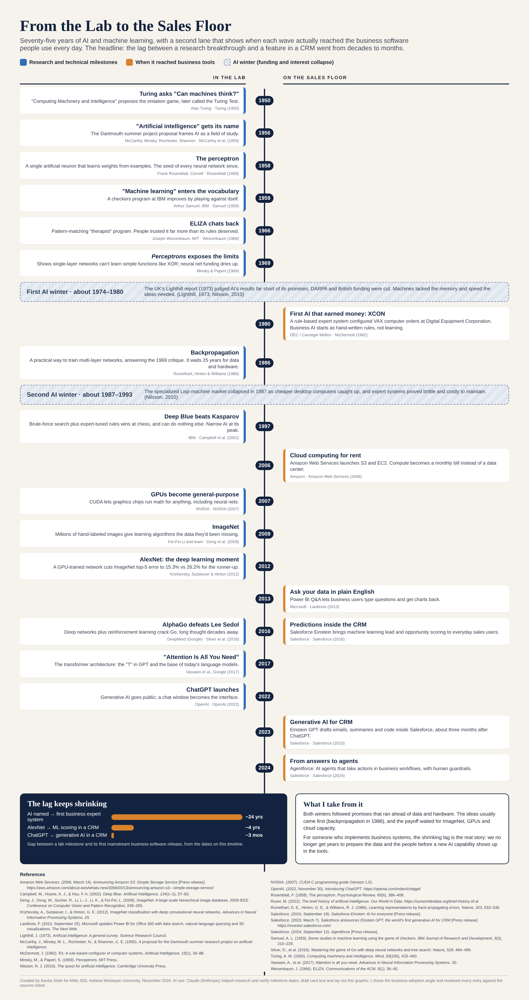

From the Lab to the Sales Floor: An AI Timeline for Business-Systems Teams
Introduction. A one-page visual history of AI and machine learning from 1950 to 2024 with a twist: a second lane shows when each research breakthrough actually reached the business software that sales and service teams use.

- Description
- Twenty dated milestones, each with the people or company involved and a source. It marks both AI winters (about 1974–1980 and 1987–1993) with their causes, and ends with a "lag" chart: about 24 years from the naming of AI to the first business expert system, about 4 years from AlexNet to machine learning scoring in a CRM, and about 3 months from ChatGPT to generative AI in a CRM.
- Objective
- To understand how AI developed, and to give business-systems teams a quick way to explain why AI features now show up in their tools faster than their data and training plans can keep up.
- Process
- I read the course sources (the IEEE Computer Society overview and the Our World in Data history), listed candidate milestones, and checked each date against an original paper or press release. I then split events into "lab" and "business" lanes, calculated the lag between matching pairs, and designed the layout so a manager could read it in two minutes.
- Tools and technologies
- HTML/CSS layout rendered to PNG and PDF; Claude (Anthropic) to help research and verify dates, draft card text, and build the layout; original papers and press releases for verification.
- Value proposition
- Unique value: Most AI timelines stop at research milestones. This one connects them to the CRM and BI releases business teams actually live with. Relevance: A Salesforce admin, BI lead, or project manager can use the lag chart to argue for starting data cleanup and user training before the next AI feature arrives, not after.
Key references
Krizhevsky, A., Sutskever, I., & Hinton, G. E. (2012). ImageNet classification with deep convolutional neural networks. Advances in Neural Information Processing Systems, 25.
Nilsson, N. J. (2010). The quest for artificial intelligence. Cambridge University Press.
Roser, M. (2022). The brief history of artificial intelligence. Our World in Data. https://ourworldindata.org/brief-history-of-ai
Salesforce. (2023, March 7). Salesforce announces Einstein GPT, the world's first generative AI for CRM [Press release].
Full reference list is on the timeline itself.